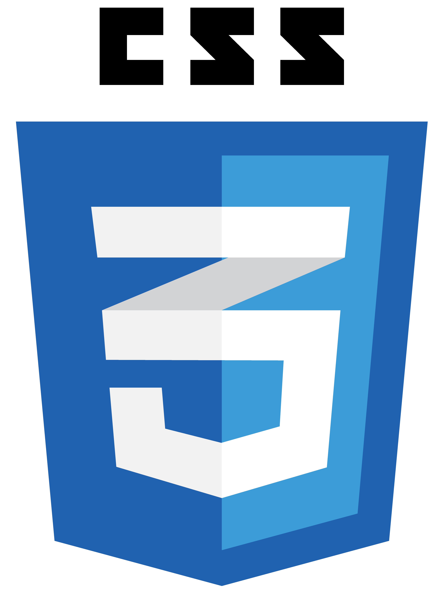
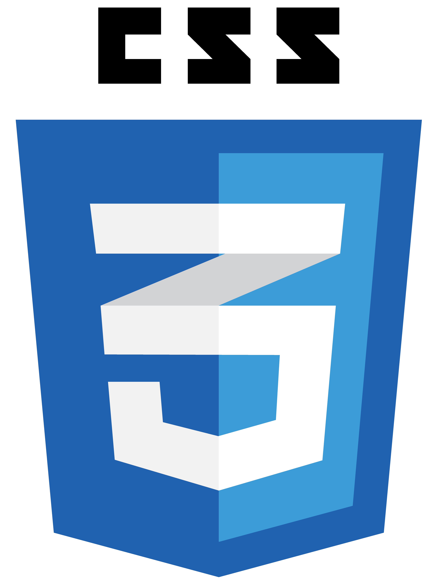

Introdução:
No mundo digital de hoje, onde a presença online é essencial para empresas, organizações e indivíduos, o desenvolvimento web emerge como uma das disciplinas mais cruciais e dinâmicas. Com o crescente papel da internet como plataforma global de comunicação e negócios, a habilidade de criar e manter websites funcionais, atraentes e responsivos tornou-se um ativo indispensável. Neste site, exploraremos os elementos essenciais do desenvolvimento web, desvendando o complexo e empolgante universo que impulsiona a nossa interconexão online.
O que é Desenvolvimento Web?
O Desenvolvimento Web é o processo de criação, construção e manutenção de sites e aplicações para a internet. Envolve uma combinação de habilidades técnicas e criativas para transformar conceitos e designs em interfaces interativas e funcionais. Isso abrange desde a escrita do código por trás das páginas até a implementação de recursos avançados, garantindo que os sites sejam compatíveis com diferentes dispositivos e navegadores. Além disso, o Desenvolvimento Web abrange a otimização de desempenho, segurança e usabilidade, garantindo que os visitantes tenham uma experiência suave e envolvente ao explorar o conteúdo online. Ou seja, é uma disciplina central que impulsiona a presença online e a interação em todos os setores da sociedade.
O que faz um desenvolvedor web?
Um desenvolvedor web é um profissional responsável por transformar conceitos e requisitos em realidade digital. Eles projetam e constroem sites e aplicações interativas, trabalhando com diversas linguagens, como HTML, CSS, JavaScript e outras tecnologias relacionadas. Os desenvolvedores web colaboram com equipes de design para traduzir layouts visuais em interfaces funcionais e responsivas, garantindo que a experiência do usuário seja intuitiva e atraente. Além disso, eles gerenciam bancos de dados, implementam recursos dinâmicos e asseguram que os sites estejam otimizados para um carregamento rápido e uma navegação eficiente. Ao se manterem atualizados sobre as últimas tendências e práticas do setor, os desenvolvedores web desempenham um papel crucial na construção do cenário digital contemporâneo.
O que significa Front-end e Back-end?
Front-end e back-end são dois componentes essenciais no desenvolvimento web que trabalham em conjunto para criar uma experiência online completa e funcional. O front-end, também conhecido como o lado do cliente, diz respeito à parte visível e interativa de um site ou aplicação. É responsabilidade dos desenvolvedores front-end criar interfaces atrativas e responsivas, utilizando linguagens como HTML, CSS e JavaScript para estruturar o conteúdo, estilizá-lo e adicionar interatividade. Por outro lado, o back-end, chamado de lado do servidor, é a parte "por trás das cenas" que lida com a lógica de funcionamento, gerenciamento de bancos de dados e todas as operações que acontecem no servidor. Os desenvolvedores back-end utilizam linguagens como PHP, Python, Ruby e outras para criar os sistemas e funcionalidades que sustentam o front-end e permitem que os sites e aplicativos funcionem de maneira dinâmica e eficiente. Em conjunto, o front-end e o back-end formam a base de uma experiência online coesa e robusta.
O que é Desenvolvimento Web full stack?
O desenvolvimento web full stack refere-se à abordagem abrangente e versátil na criação de aplicações e sites, abrangendo tanto o front-end quanto o back-end do processo. Os desenvolvedores full stack são proficientes em diversas tecnologias e linguagens de programação, permitindo que eles assumam a responsabilidade por todas as etapas do ciclo de desenvolvimento. Isso inclui a criação da interface do usuário, interatividade, lógica de negócios, gerenciamento de bancos de dados e implantação. A capacidade de trabalhar em ambos os lados do espectro de desenvolvimento proporciona aos profissionais full stack uma visão ampla e uma compreensão profunda de como as diferentes partes de uma aplicação se integram. Essa abordagem versátil permite a criação de projetos completos e funcionais de ponta a ponta, tornando os desenvolvedores full stack ativos valiosos na indústria do desenvolvimento web.
Princiais tecnologias de desenvolvimento web:
No cenário em constante evolução da internet, as tecnologias de desenvolvimento web desempenham um papel fundamental na criação de experiências digitais ricas e interativas. Desde a sua criação, a web tem testemunhado um rápido avanço, impulsionado por linguagens e ferramentas inovadoras. Nessa jornada, três tecnologias principais emergem como pilares essenciais: HTML, JavaScript e CSS.
- HTML:
- Java Script:
- Css:
HTML, ou Hypertext Markup Language, é uma linguagem fundamental no desenvolvimento web. Trata-se de uma linguagem de marcação usada para estruturar e organizar o conteúdo de uma página na web. Por meio de elementos e tags, o HTML define a hierarquia de títulos, parágrafos, imagens, links e outros elementos presentes em uma página. Ao fornecer a estrutura básica de um documento, o HTML permite que os navegadores interpretem e exibam o conteúdo de maneira coerente e compreensível.
JavaScript é uma linguagem de programação amplamente utilizada no desenvolvimento web para adicionar interatividade e dinamismo às páginas. Originalmente criada para manipular elementos em navegadores, o JavaScript agora é aplicado tanto no front-end quanto no back-end. Ele permite a criação de elementos interativos, como menus deslizantes, validação de formulários em tempo real e atualizações dinâmicas de conteúdo, sem a necessidade de recarregar a página.
CSS (Cascading Style Sheets) é uma linguagem de estilo utilizada no desenvolvimento web para controlar a apresentação e o layout de elementos em páginas e aplicativos. Ele permite que os desenvolvedores definam cores, fontes, espaçamento, posicionamento e outros aspectos visuais de maneira separada do conteúdo HTML. Isso promove a consistência e facilita a manutenção, pois as mudanças de estilo podem ser aplicadas globalmente com apenas uma atualização no arquivo CSS. O CSS também é fundamental para criar designs responsivos, adaptando a aparência do site a diferentes dispositivos e tamanhos de tela. Em conjunto com HTML e JavaScript, o CSS é uma peça-chave para construir experiências web atraentes e funcionais.
 

Melhores editores de codigo:
Cada editor de código tem suas próprias vantagens e características distintas. A escolha entre eles depende das suas preferências pessoais e do ambiente de desenvolvimento que você procura. Aqui estão alguns exemplos dos melhores editores de código, e seus respectivos links para instalação:
-
Visual Studio Code
O Visual Studio Code, desenvolvido pela Microsoft, é um editor de código gratuito e altamente popular. Ele oferece uma ampla gama de extensões que aprimoram sua funcionalidade, suportando várias linguagens de programação e frameworks. Possui recursos como realce de sintaxe, depuração integrada, controle de versionamento e um poderoso terminal integrado. Sua interface personalizável e a capacidade de se integrar facilmente com serviços em nuvem o tornam uma escolha popular entre os desenvolvedores.
Clique aqui para instalar VS code-
Sublime Text
O Sublime Text é um editor de código leve e rápido, conhecido por sua velocidade de inicialização e eficiência. Ele oferece uma interface limpa e personalizável, com recursos como busca e substituição em vários arquivos, realce de sintaxe personalizável e um sistema de plugins. Apesar de ser pago, oferece uma versão de avaliação gratuita. Sua simplicidade e desempenho o tornam uma escolha sólida para muitos desenvolvedores.
Clique aqui para instalar Sublime text-
Atom
O Atom é um editor de código de código aberto desenvolvido pelo GitHub. Ele é conhecido por ser altamente personalizável, permitindo que os usuários ajustem a aparência e o comportamento do editor para se adequar às suas preferências. O Atom é estendido por meio de pacotes de extensão, o que permite adicionar recursos e funcionalidades específicos de acordo com as necessidades do desenvolvedor. Sua natureza de código aberto e comunidade ativa o tornam uma escolha popular entre muitos desenvolvedores.
Clique aqui para instalar Atom

Principais opções gratuitas para hospedagem de sites estáticos:
Lembre-se de que cada plataforma pode ter suas próprias limitações e recursos específicos, portanto, é importante explorar cada opção para determinar qual se alinha melhor com suas necessidades e conhecimentos técnicos. Aqui abaixo estão algumas das principais opções gratuitas para hospedagem de sites estáticos, juntamente com os seus respectivos links:
-
GitHub Pages:
Uma plataforma de hospedagem oferecida pelo GitHub para hospedar sites estáticos diretamente de repositórios Git.
Clique aqui para acessar o site-
Netlify:
Uma plataforma de hospedagem que automatiza o processo de implantação de sites estáticos diretamente do repositório Git e oferece integração contínua.
Clique aqui para acessar o site-
Vercel:
Uma plataforma de hospedagem que também permite implantar sites estáticos a partir de repositórios Git e oferece implantações rápidas e escaláveis.
Clique aqui para acessar o site-
Firebase Hosting:
Oferecido pela Google, o Firebase Hosting permite hospedar sites estáticos com facilidade e oferece recursos de CDN (Content Delivery Network) para melhorar o desempenho.
Clique aqui para acessar o site-
GitLab Pages:
Semelhante ao GitHub Pages, o GitLab Pages é uma opção para hospedar sites estáticos a partir de repositórios Git no GitLab.
Clique aqui para acessar o site
Dicas de como iniciar a carreira como desenvolvedor Web:
Iniciar uma carreira como desenvolvedor web pode ser uma jornada emocionante, mas também exige dedicação e aprendizado contínuo. Aqui estão algumas dicas para começar:
- Aprenda os fundamentos:
- Domine o Básico de programação:
- Explore Frameworks e Bibliotecas:
- Estude Regularmente:
- Networking:
- procure oportunidades
- Seja paciente e persistente:
Comece com HTML, CSS e JavaScript, as bases do desenvolvimento web. Familiarize-se com os conceitos de estrutura, estilo e interatividade.
Além das linguagens da web, compreender os princípios básicos de programação, como lógica, condicionais e loops, é essencial para criar soluções web eficazes.
Aprenda sobre frameworks populares, como React, Angular ou Vue.js (front-end) e Node.js (back-end). Eles podem acelerar o desenvolvimento e são amplamente usados na indústria.
A tecnologia web está em constante evolução. Mantenha-se atualizado lendo blogs, assistindo a tutoriais e participando de cursos online.
Participe de eventos locais, meetups e conferências para conhecer outros desenvolvedores e profissionais da indústria.
Comece como freelancer, estagiário ou colaborador de projetos open source para ganhar experiência e construir conexões..
O aprendizado e o crescimento na carreira levam tempo. Mantenha-se motivado, mesmo quando enfrentar desafios.
> Lembre-se de que a carreira de um desenvolvedor web é uma jornada contínua de aprendizado e adaptação. Não tenha medo de explorar diferentes áreas, experimentar tecnologias novas e continuar melhorando suas habilidades ao longo do tempo